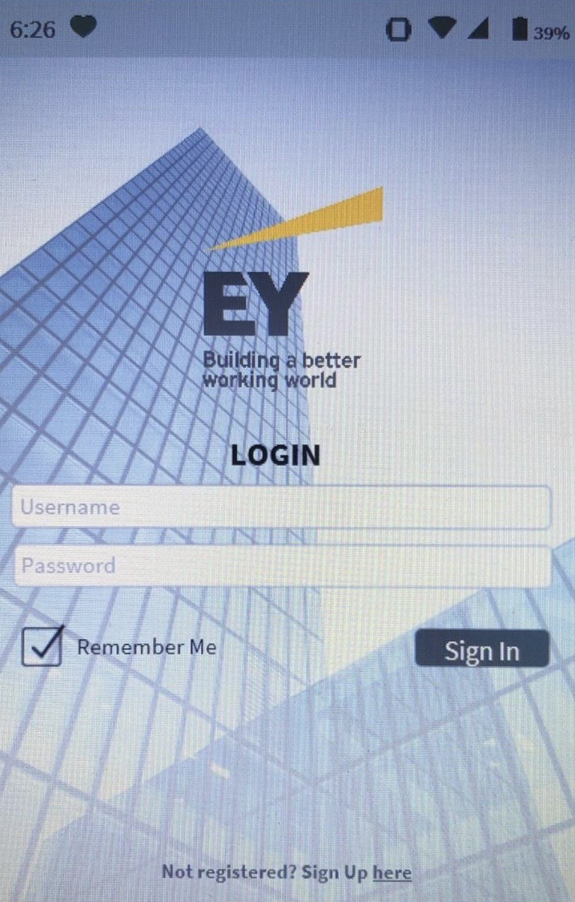
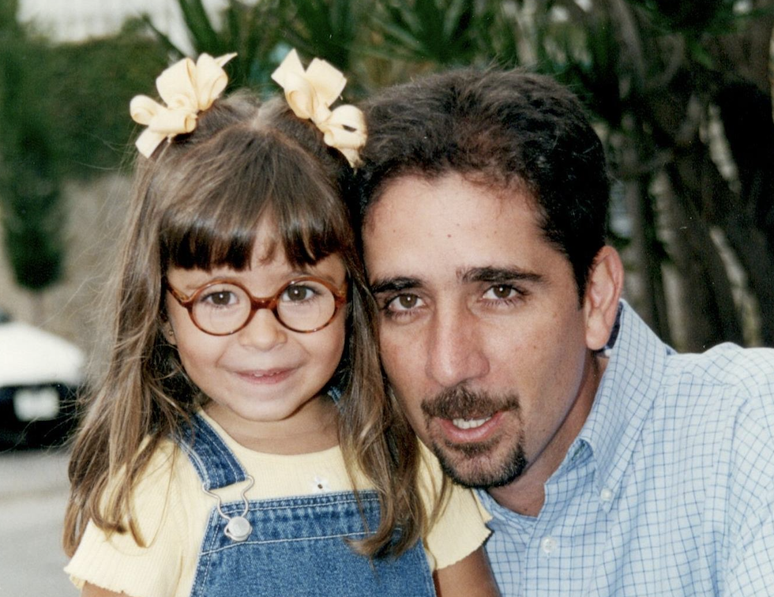
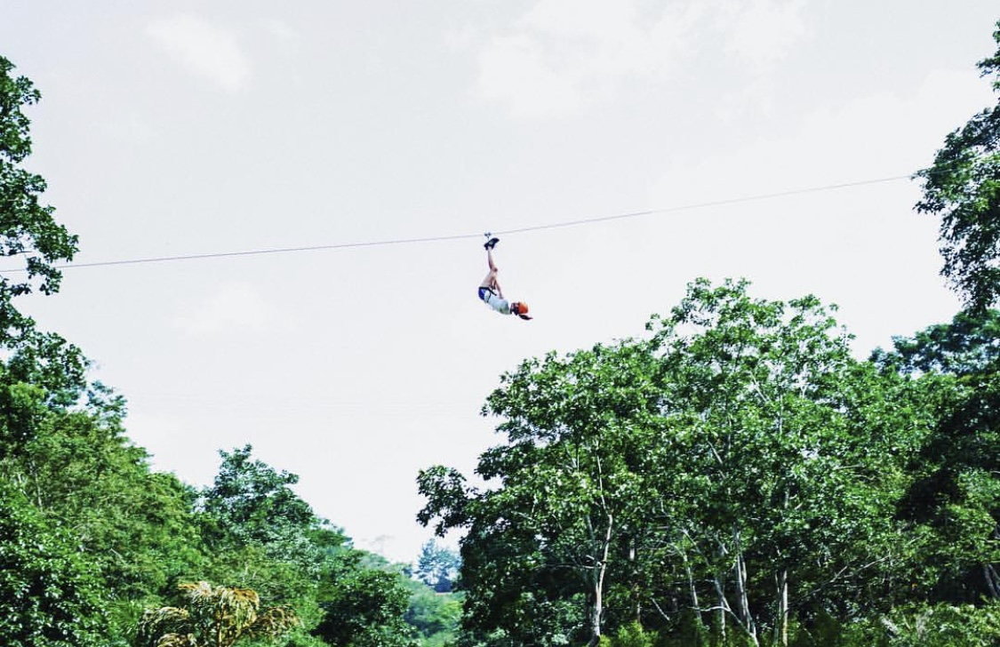
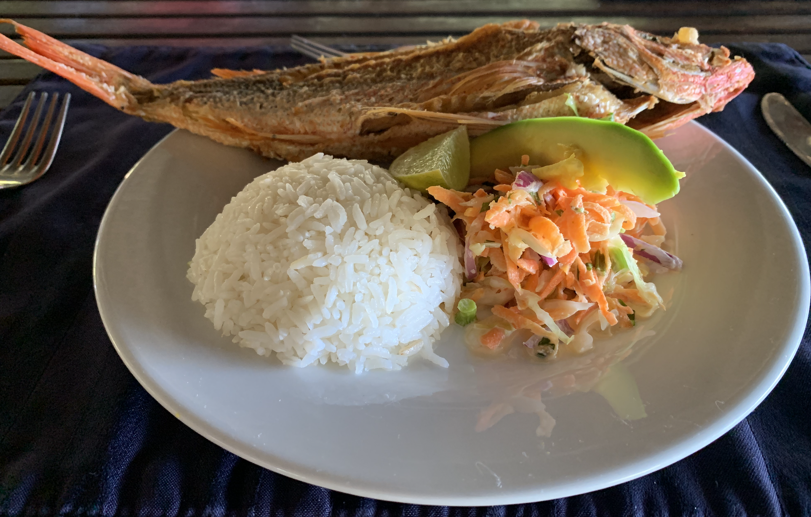
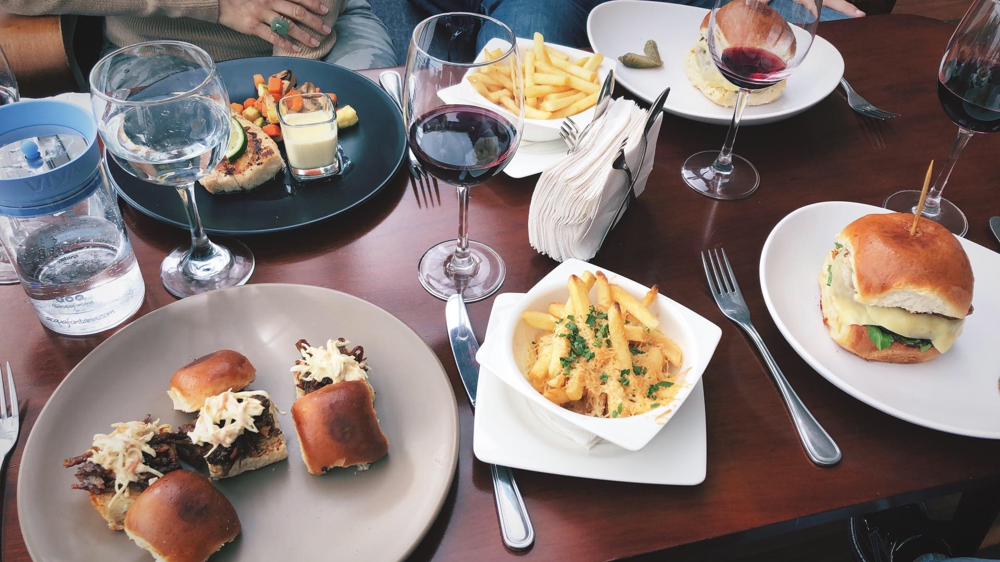

Sofia Fernandez Chacin

Get To Know Me!
I was born in Caracas, Venezuela. I moved to Atlanta for college at Georgia Tech, where I am pursuing my Bachelors in CS, with a concentration in Intelligence and Devices.
Among my favorite extracurriculars you can find volleyball and swimming for sports, playing the piano and dancing for the arts, and speaking French for the languages.
I am very involved in my SHPE Chapter and Familia, where I currently serve as Internal Vicepresident, managing recruitment, retention and cohesion among its members. I also enjoy my Resident Advisor work on campus, where I assist Freshmen with their college transition.
Due to my origins, I have acquired a very global perspective, so I very much value individual aptitudes that add up to the collective interest. I regard myself as very resilient and committed, and look forward to opportunities like this program to put my technological preparation into practice. Hands on!
PROJECT SHOWCASE
Manufacture of a Baby Incubator Prototype
In a team of 3 (with my friends Andrea and Gabriela), we performed a 2-year investigation to determine the essential functions of an incubator. Then, we designed a prototype that implemented the vital functions using materials accessible for low-resource populations. After performing functionality validation tests, we donated several prototypes to foundations in need.
UI Features of a Cash Flow Mobile App
During my internship experience at Ernst & Young Consulting, I had the chance of helping a team that was participating in their internal “Shark-Tank” style competition. They developed a solution for cash flow issues they were experiencing in the company. I personally provided assistance on improving the UI features of the software they developed, like input control and navigation components.
Programming of an Interactive Game
For a project-based class, I teamed up to design and program an interactive game with the “Space Traders” theme from scratch. The back-end was done in Java and the user interface was done with JavaFX. It consisted of a individual player trading game, where resources and money gave you power, and there were varied NPC encounters that interacted with the player and made it more dynamic.
KODAK MOMENTS

High-school grad with mom!
♥

At the beach with my boyfriend!
♥
Best friends from college!
♥
TBT with dad and my glasses!
♥
Family portrait skiing!
♥
Zip lining adventure!
♥
CAMERA EATS FIRST
I am definitely not a professional photographer, but I really enjoy taking pictures, specifically of food. I actually enjoy it so much that I can’t ever start eating before taking a snapshot of it first. People usually complain, but I always remind them that the camera eats first! Until now, I had never thought about why I do it, but now I realize that there are mainly 2 motives behind it.
The first one is that I am very oddly satisfied by a well-thought out plate presentation, and the way they’re placed in a manner appealing to the consumer, in this case, me! Here I share with you 3 examples of food-shots that I took. The top right portrays a typical breakfast in my home country: an “arepa” with multiple sides, scrambled eggs, cheese, ham, and of course, some shredded beef and a touch of black beans. To the left, it’s a meal for a beach day: fried fish, rice and some fresh salad. Below, I bet you know it: mini-burgers and french fries!
The other purpose, well, it’s just a matter of initializing small talk with friends. Sometimes you’re trying with all your efforts to maintain a healthy diet and sharing what you eat with others on the same plan as it makes you feel supported and gives you more motivation. Occasionally, you feel like cooking famous recipes from scratch and by your own, so why not share it? I am the kind of person that cuts the chocolate lava-cake in half just to record it so be prepared!
STEP, BRUSH, TAP!
WELL-ROUNDED ACADEMY
Long story short, I used to take dance classes at an academy that was very popular for its Jazz lessons, but they asked every member to learn 4 distinct types of dances: Jazz, Ballet, Flamenco, and Tap. They were very enthusiastic about the well-rounded dancer. That’s where I discovered my passion for Tap! It was an activity that I hadn’t done before, following the rhythm of music by making distinct sounds with my feet.
MINDFULNESS
The name comes from the metal “tap” that the shoe has on the toe and the heel. Tapping those against the floor is what makes the percussion-like sound that develops the whole heart of the dance. I found myself anticipating the Tap class. It effortlessly granted me a space where I felt completely comfortable of being myself and coordinating my mind and body, which is why I practiced it for 7 years.
ATYPICAL
I also regard it as a very special acquired skill, since not many people find it appealing or even manageable. It has a couple of movements like the “brush” or the “shuffle” which require a lot of motor coordination and awareness of the desired sound. The incredible thing about it is that if you’re suficiently familiar with the moves, you can dance along almost any kind of music… classic, hip-hop, country, you name it!
BREAK A LEG!
I will share a brief video with you where I am dancing a short part of a song along my teacher, it was a few years ago so I probably look younger. I encourage you to watch it various times and try to learn it, it doesn’t matter if you don’t have the shoes, I promise it will still be really fun!
WATCH VIDEO HERE: